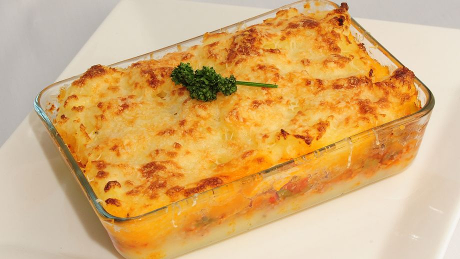

Pastel de Papas

Receta tradicional de pastel de papas
El pastel de papas argentino es un plato clásico y popular que se compone
de capas alternas de puré de papas y relleno de carne. Esta deliciosa
preparación es muy apreciada por su sabor reconfortante y se suele servir
como plato principal en diversas celebraciones familiares y eventos
especiales.
Ingredientes
- 1 kilogramo de Papas
- ½ kilogramo de Carne picada de ternera
- 1 Cebolla
- ½ Pimiento morrón
- 2 Dientes de ajo
- 1 Pastilla de caldo
- Ajo en polvo
- Pimentón
- 25 gramos de Manteca
- 1 Chorrito de leche
- Nuez moscada
- Aceite
- 1 pizca de Sal
- 1 pizca de Pimienta
Pasos
- Cortar las papas en cubos y ponerlas a hervir con sal.
- Paso 2 :
- Picar la cebolla, el ajo y el pimiento morrón.
- Paso 3 :
-
Calentar el aceite en una olla o sartén y sofreír la cebolla, el
pimiento y los ajos.
- Paso 4 :
-
Cuando la cebolla está transparente, agregar la carne y sofreírla
mientras se deshace con una cuchara.
- Paso 5 :
-
Salpimentar, agregar la pastilla de caldo, el ajo en polvo, el pimentón
y cocer la carne 15min.
- Paso 6 :
-
Una vez que las patatas estén hervidas, hacer en caliente un puré con la
manteca y la leche. Salpimentar.
- Paso 7 :
-
Poner en una fuente para horno una base de puré, agregar por encima la
carne (dejar que se entibie un poco) y colocar otra capa de puré. Para
distribuirlo, se moja la cuchara con agua fría.
- Paso 8 :
-
Llevar a horno fuerte o gratinador unos 15-20 min. o hasta que la parte
de arriba esté crocante.